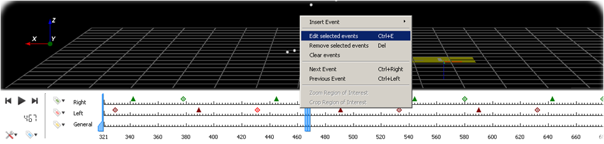
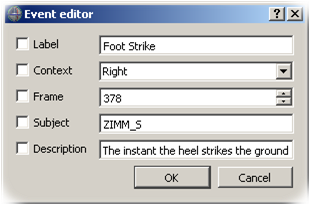

Note: Only the C3D format supports events.
Note: For MacOS X user, the Ctrl is replaced by the command key.
To edit an event you can proceed this way:
- Selected event on the time bar
- Use the Left click to select the event you want to edit
- To select more than one event you can used shift or Ctrl
- When your event is selected, right click on Time bar to see the drop-down menu and choose
Edit selected events or used Ctrl + e
- Current event can be edited (Label / Context / Frame / Subject / Description) by using the Event editor window

Time bar with the contextual menu to edit events.
- Use from the time bar.
- Use the Left click to select the event you want to edit
- To select more than one event you can used shift or Ctrl
- When your event is selected, use to see the drop-down menu and choose
Edit selected events or used Ctrl + e

Dialog box when editing an event.
You can always add or remove an event. See the tutorial to add/remove event.